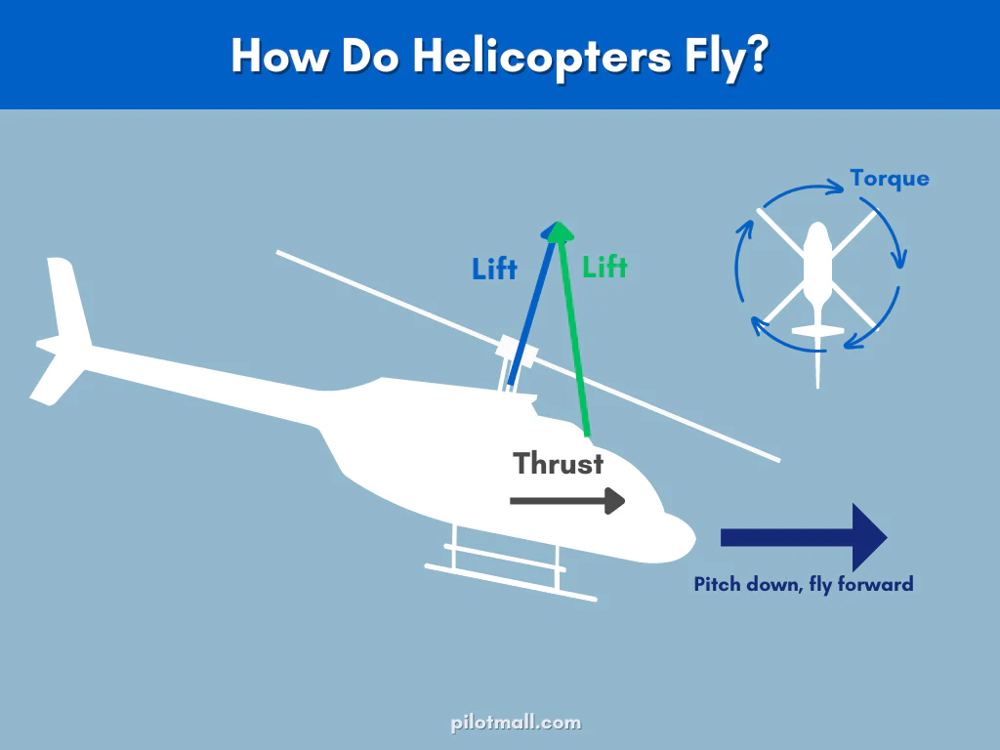
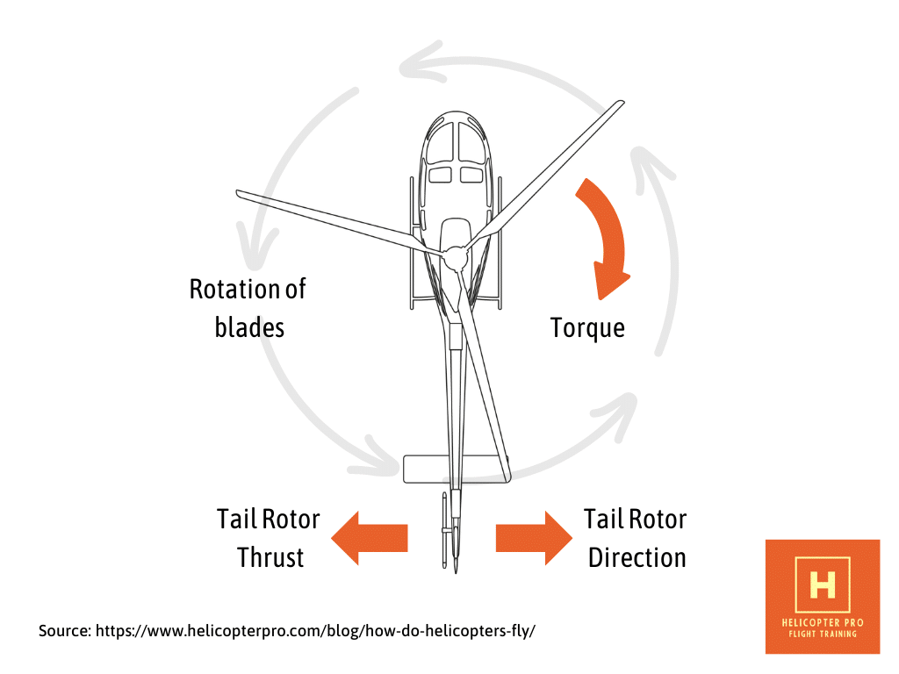
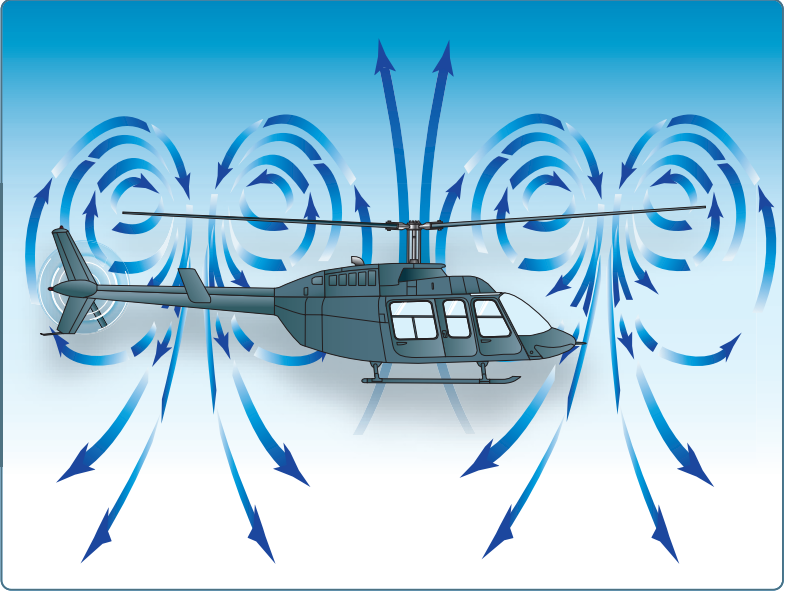
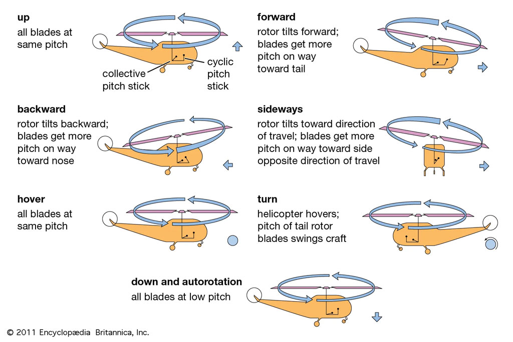

Table of contents |
|---|
| Abstract |
| Introduction |
| Understanding Helicopter Aerodynamics |
| Conclusion |
| Reference List |
Helicopter aerodynamics is a complex field combining fluid mechanics and engineering. In contrast to airplanes, helicopters derive lift, thrust, and control entirely
through spinning rotor blades, affording vertical takeoff and hovering and omnidirectional flight. The pressure differences over the rotor blades, influenced by the
design, angle of attack, and rotational speed, give rise to lift. Helicopters share lift and thrust in the same system; however, the transition from hover to forward
flight brings its own problems, such as dissymmetry of lift, which is controlled by blade flapping and feathering. Hovering requires a lot of power; induced flow
decreases efficiency, but the ground effect reduces energy requirements near the surface. To counter main rotor torque, helicopters use systems like tail rotors or NOTAR.
In emergencies,autorotation enables controlled landings without engine power. These have brought about stability challenges associated with vibrations, blade stall,
and the vortex ring state, addressed by engineering innovations. Continuing helicopter development increases efficiency and expands applications in various fields.
The complex and exciting subject of helicopter aerodynamics is indeed a subject of study that combines different aspects of fluid mechanics, physics, and engineering
in a most unique way. Unlike airplanes with fixed wings to produce lift, helicopters have rotating blades, popularly known as rotors, which produce the much-needed
forces of lift and thrust besides offering the necessary control. This peculiar design allows a helicopter not only to hover at a given point but also to take off
vertically from the ground and move fluently in every direction without any problem, hence bringing an unrivaled versatility into their operational capacities.
An appreciation of the principles underlying helicopter flight requires a complex flow pattern of air circulating around the rotors. It also demands an investigation
of how all the different forces interact with each other to contribute to flight. Furthermore, the general performance of the helicopter is influenced by certain
design considerations significant in its functionality.

(PilotMall.com. (n.d.))
Figure 1 above outlies the force, lift and thrust:
The aeroplane's wings are made to rotate, not just fixed and constant in their position. As these wings start to rotate, a pressure difference arises between the
upper and lower surfaces of the blades. This pressure difference eventually creates an upward force that lifts the aircraft. The magnitude of the lift depends on various
factors, such as the shape and form of the blades themselves, the angle at which they strike the incoming airflow-an angle known as the angle of attack-and the rotational
speed at which they are turning. The helicopter blades slice through the air in a circular pattern, creating an area known as the rotor disk. It is worth noting that the
larger the rotor disk is, or the faster the blades are spinning, the greater the lift that can be achieved by the helicopter. Unlike aeroplanes, which require forward motion
to generate and sustain lift, helicopters have the unique ability to maintain lift while hovering in a single location, thanks to the continuous movement of their rotors.

(Leishman, 2022)
The rotor systems power helicopters. Tilt the rotor disk in the direction of travel, and thereby, part of the lift force is converted to thrust. This feature allows a helicopter
to travel in any direction it wants with ease. Unlike airplanes, helicopters have the unique feature of combining lift and thrust in one integral system; hence, there is no need
for auxiliary engines and propellers as in conventional aircraft. But unlike airplanes, this transition from a stationary hover to forward flight has its own unique set of problems,
one of which is the phenomenon called dissymmetry of lift.
In forward flight, there is a lot more lift on the advancing rotor blade compared to the retreating blade, resulting in the generation of instability in the flight dynamics of the
aircraft. To balance this disparity and correct it, mechanisms such as blade flapping and feathering are resorted to in order to ultimately level out and even the lift distribution
over the entire rotor disk for a much more stable flight performance.

(Wikipedia Contributors (2019))
Hovering, which is widely regarded as the quintessential and defining capability of helicopters, entails a considerable usage of power and energy: the rotors must continuously exert
force by pushing air downwards towards the ground in order to achieve the required lift to keep the aircraft airborne. The phenomenon described as induced flow, or the downwards flow
of air through the rotor disk, acts to lower the overall efficiency of the blades during this procedure. On the contrary, hovering at lower height, closer to the ground, experiences
some benefit due to the commonly described effect called the ground effect; here, the power needed is reduced to some degree because the airflow in the area surrounding the rotor system
is constrained.To counteract the torque created by the main rotor, helicopters use anti torque systems such as a tail rotor or the quieter, low-maintenance NOTAR system which uses airflow
instead of a tail rotor.
In the event of emergencies during flight, helicopters are capable of performing a particular maneuver called autorotation: this is a process where the rotor blades of the helicopter
are literally turned or driven by the upward flow of air that occurs naturally as the helicopter descends. This enables the pilot to make controlled landings even in cases where there
is a failure of the engine power. This process involves the different areas of the rotor disk, which include driving, driven, and stall conditions, all of which combine to ensure stability
and control during the descent phase. The complex and multilayered nature of the rotating elements within helicopters makes these devices often plagued by a great number of vibrations and
very critical stability problems; to counteract and alleviate these, engineers adopt several dampeners as well as resort to new materials specifically produced to reduce the shaking stress.
In addition, other phenomena also affect the stability of helicopters in general - one is the blade stall, or the sad event of losing lift when the attack angle gets too high - and the vortex
ring condition, a hazardous condition wherein the helicopter, while descending, inadvertently slips into its own downwash, resulting in sudden and extreme loss of lift.

(www.helicopterpro.com. (2023))
What one might eventually arrive at as a conclusion is that in the complicated world of helicopters, the laws of aerodynamics are not only scientific principles but also engineering
principles and even a certain aspect of artistry, all intermixed with each other at the same time. Every single aspect, from lift generation and thrust production to the control of
handling stability in flight and the performance of emergency procedures, requires a deep and complete understanding of the complicated interaction between air flows and the various
forces involved. In terms of capability and efficiency, the development and progress of the helicopter are constant and continuous; therefore, there is still much potential for further
developments and innovation in critical areas such as transportation, rescue operations, and military activities, which are still being researched and developed.
1) PilotMall.com. (n.d.). How Do Helicopters Fly? (The Aerodynamics Explained). [online] Available at:https://www.pilotmall.com/blogs/news/how-do-helicopters-fly-the-aerodynamics-explained
2) Wikipedia Contributors (2019). Vortex ring state. [online] Wikipedia. Available at:https://en.wikipedia.org/wiki/Vortex_ring_state
3) helicopterpro (2023). How Helicopters Fly? Understanding the Aerodynamics. [online] Available at: https://www.helicopterpro.com/blog/how-do-helicopters-fly/
4) Leishman, J.G. (2022). Fluid Statics & the Hydrostatic Equation. eaglepubs.erau.edu. [online] doi: https://eaglepubs.erau.edu/introductiontoaerospaceflightvehicles/chapter/helicopters-vtol/
Loading last update time...